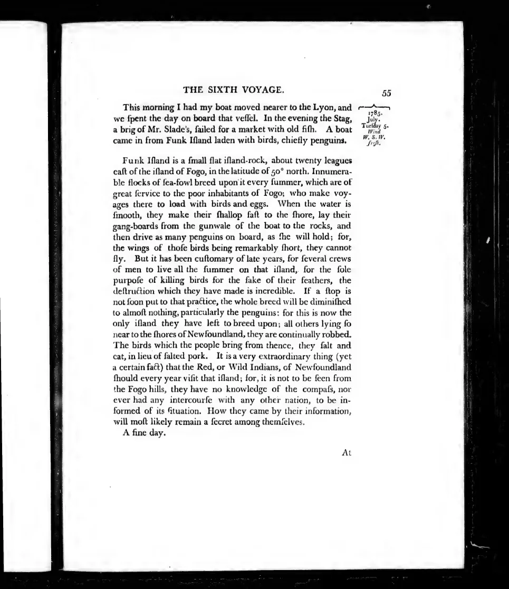

Journal, vol. III, p. 55. A boat of birds from Funk Island prompts Cartwright’s account of harvesting for food, eggs, and feathers.
Original text
TranscriptionThis morning I had my boat moved nearer to the Lyon, and we spent the day on board that vessel. In the evening the Stag, a brig of Mr. Slade’s, sailed for a market with old fish. A boat came in from Funk Island laden with birds, chiefly penguins1.
Funk Island is a small flat island-rock, about twenty leagues east of the island of Fogo, in the latitude of 50° north. Innumerable flocks of sea-fowl breed upon it every summer, which are of great service to the poor inhabitants of Fogo; who make voyages there to load with birds and eggs. When the water is smooth, they make their shallop fast to the shore, lay their gang-boards from the gunwale of the boat to the rocks, and then drive as many penguins on board, as she will hold; for, the wings of those birds being remarkably short, they cannot fly.
But it has been customary of late years, for several crews of men to live all the summer on that island, for the sole purpose of killing birds for the sake of their feathers, the destruction which they have made is incredible. If a stop is not soon put to that practice, the whole breed will be diminished to almost nothing, particularly the penguins: for this is now the only island they have left to breed upon; all others lying so near to the shores of Newfoundland, they are continually robbed. The birds which the people bring from thence, they salt and eat, in lieu of salted pork.
Digitized edition
5 July 1785 · published 1792
Edition
A Journal of Transactions and Events during a Residence of Nearly Sixteen Years on the Coast of Labrador. Newark: Allin and Ridge, 1792. Volume III, page 55; entry for 5 July 1785.
Further reading
- 01Frederic A. Lucas, The Expedition to Funk Island ↗
Report of the National Museum (1888): 493–529. - 02Jessica E. Thomas et al., “Demographic reconstruction” ↗
eLife 8 (2019), e47509.